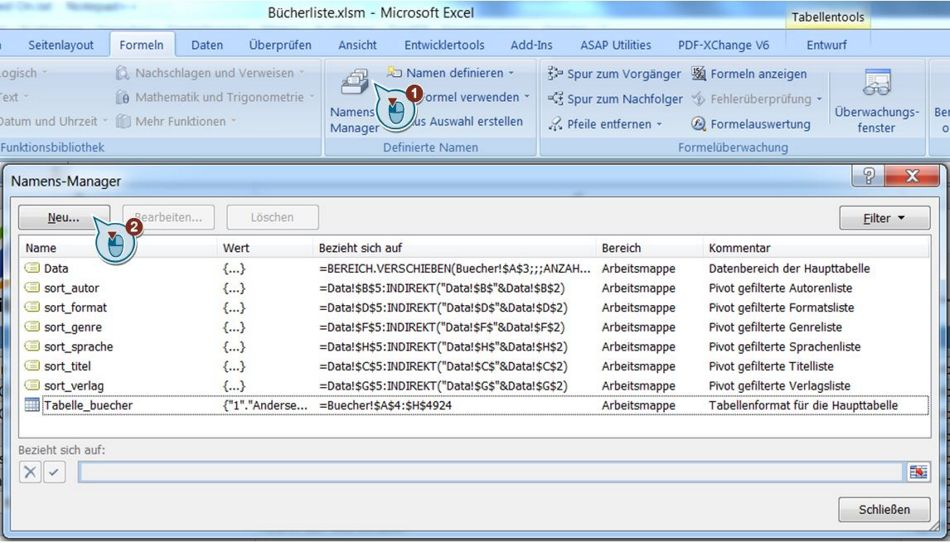
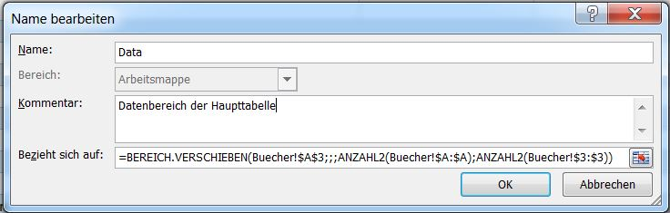
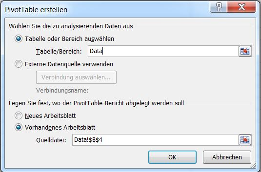
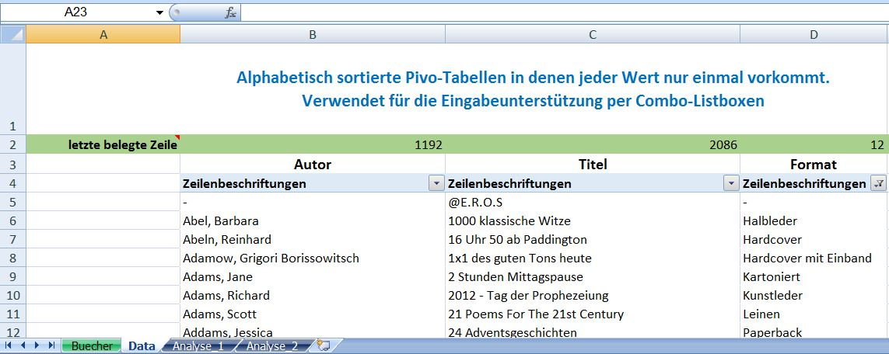
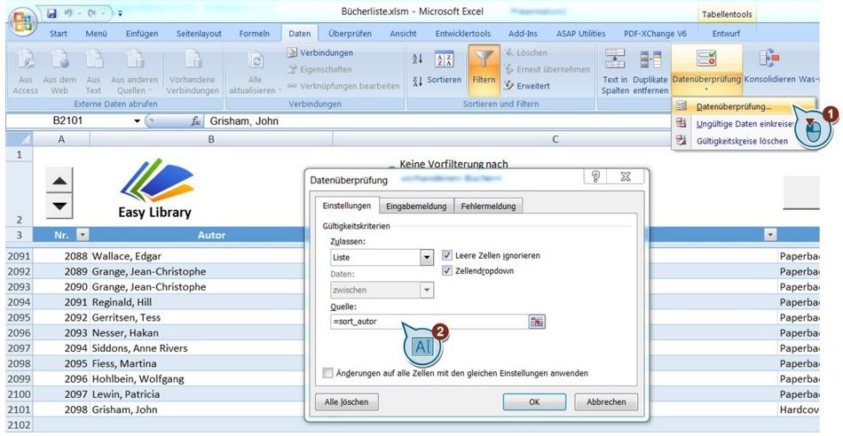
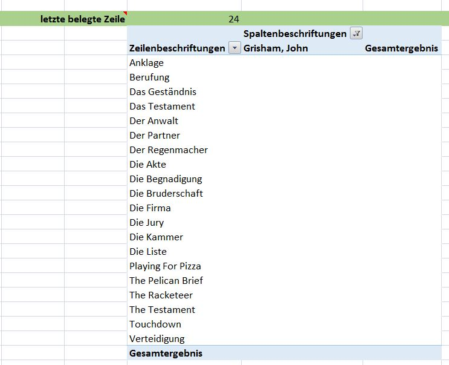
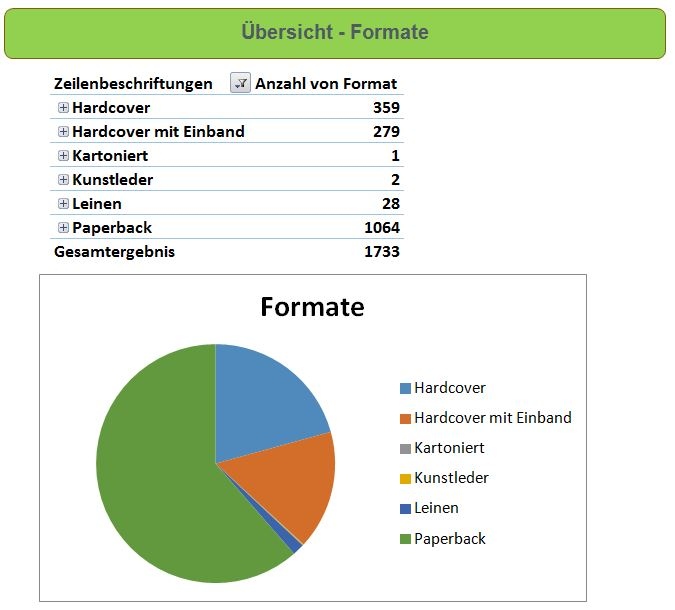

Excel VBA Datenvalidierung mittels Drop-Down Combo-Box und Autovervollständigung
- Am Beispiel einer Bibliotheks-/ Bücherlistenverwaltung -
Voraussetzungen:
- Microsoft Excel ab Version 2007
- Schwierigkeitsgrad: Mittel
- Skills: VBA-Programmierung
- Lese Zeit: 15 min
Die im Excel-Standard enthaltene Autotextvervollständigung, während der Eingabe, ist auf eine maximale Anzahl von Zellen begrenzt. Als "Lösung" bietet Excel Drop-Down-Listen an. Aber diese sind optisch unansehnlich und funktionell begrenzt. Über
VBA-Programmierung kann man die Grundfunktionalität allerdings zu einem komfortablen Eingabe-Drop-Down-Menü inkl. Autotextvervollständigung aufbohren.
Einführung:
Im folgenden Artikel beschreibe ich, wie man eine komfortable Eingabe-Drop-Down-Liste inkl. Autotextvervollständigung und Datenvalidierung realisiert. Ergänzt wird das Ganze um die Möglichkeit der Werte-Vorfilterung und Pivot-Datenanalyse.
Als
plakatives Beispiel wird die Verwaltung einer Büchersammlung (Home Library) herangezogen. Der Code ist aber leicht auf beliebige andere Einsatzszenarien übertragbar. Vorrangig ist ein Einsatz dort vorteilhaft, wo große Datenmengen um manuelle Einträge
ergänzt oder einfach verwaltet werden sollen.
Grundlegende Funktionen des Bücher-Beispiels aus Anwendersicht sind:
1. Use Case:
Es soll ein neues Buch (ein neuer Datensatz) in die Liste eingetragen werden. Man weiß jedoch nicht, ob das Buch bereits vorhanden ist, d.h. man will sehen, welche Bücher von dem Autor bereits in der Sammlung enthalten sind. Die Eingabe soll möglichst
komfortabel und schnell erfolgen.

- Doppelklick ins Autorenfeld. Ein Drop-Down-Menü erscheint und man beginnt, den Autor einzutragen
- Die Eingabe wird automatisch vervollständigt, wenn der Autor bereits vorhanden ist
- Doppelklick ins Titelfeld erzeugt bei ausgewählter Option "Vorfilterung" eine Drop-Down-Liste, in der man alphabetisch alle bereits vorhandenen Bücher des Autors sieht. Ist das aktuelle Buch noch nicht vorhanden, trägt man es neu ein
- Bei Option "keine Vorfilterung" werden alle vorhandenen Titel als Drop-Down-Liste angezeigt
- Bei der Eingabe z.B. des Formats kann man direkt über ein Drop-Down-Menü das Buchformat auswählen, ohne Text eingeben zu müssen
- Automatisch wird die Zeilennummerierung am Anfang der Zeile bei Eingabe neuer Werte erzeugt
2. Use Case:
Es sollen zum Beispiel alle Bücher eines Autors, oder alle Bücher eines Genres angezeigt werden.

- In das jeweilige Wertefeld klicken, nach dem man filtern möchte
- Auf den Button Filtern klicken -> Das Ergebnis wird angezeigt
- Die Filterung wird über den Button Filter löschen wieder aufgehoben
3. Use Case:
Es soll eine Analyse über alle Genres, Autoren usw. angezeigt werden.

- In den Analyse-Tabellenblättern können mittels Pivot-Tabellen die Daten gefiltert werden.
Technische Realisierung:
Zur Umsetzung werden folgende Excel Funktionalitäten verwendet:
- Pivot-Tabellen
- VBA-Programmierung
- Combo-Boxen
- Namensbereiche
- Drop-Down-Datenvalidierungslisten (don't worry, das klingt kompliziert, ist aber nur ein Klick)
Das Projekt ist grundlegend auf dem "Data Validation Combo-Box" Beispielcode aufgebaut, welcher deutlich erweitert wurde. Zusammen werden wir innerhalb von drei
großen Schritten die fertige Tabelle erzeugen.
1. Autovervollständigung
Zunächst einmal ist das Ziel eine dynamische Tabelle zu erzeugen. D.h. der Datenbereich soll sich dynamisch anpassen, wenn in der Quelldatei neue Werte hinzukommen (neue Bücher eingetragen werden). Das lässt sich über Namensbereiche realisieren.
Zum Anlegen wechselt man nach
Formeln -> Namens-Manager -> Neu...

und gibt in das Dialogfeld den Namen der Datenbank und in das Feld bezieht sich auf folgende Formel ein:

=BEREICH.VERSCHIEBEN($A$3;;;ANZAHL2($A:$A);ANZAHL2($3:$3))
Es muss berücksichtigt werden, dass die Überschriftenzeile mit in den Bereich fallen muss. In unserem Formelbeispiel steht die erste Datenbanküberschrift in Zelle A3. Wäre diese in C9 anstatt in A1, so würde die Formel entsprechend abgändert
lauten:
=BEREICH.VERSCHIEBEN($C$9;;;ANZAHL2($C:$C);ANZAHL2($9:$9))
Im konkreten Beispiel mit mehreren Tabellenblättern besteht ergänzend noch der Sonderfall, dass man das Tabellenblatt explizit angeben muss, damit der Bereich korrekt erzeugt wird. Die Formel lautet also:
=BEREICH.VERSCHIEBEN(Buecher!$A$3;;;ANZAHL2(Buecher!$A:$A);ANZAHL2(Buecher!$3:$3))
Als nächsten Schritt wollen wir eine Autovervollständigung für das Autoren-Eingabefeld erstellen. Excel enthält bereits standardmäßig eine Autovervollständigung, allerdings nur für einige hundert Werte. Ziel ist aber eine Vervollständigung über eine unbegrenzte
Anzahl von Autoren. Dies kann über die Funktion Datenvalidierung erreicht werden. Jedoch würde eine solche Validierung über alle Autoren, auch alle doppelten Einträge enthalten. D.h. ist fünf mal Autor XY vorhanden, würde in der Autovervollständigungsliste
auch fünf mal dieser Autor angezeigt werden. Ein Trick um das zu verhindern, ist als Quelle der Datenvalidierung eine Tabelle zu verwenden, die jeden Autor nur ein einziges mal enthält. Am einfachsten lässt sich das über Pivot-Tabellen umsetzen. D.h.
wir werden eine Pivot-Tabelle der Autoren anlegen. Vorzugsweise in einem neuen Tabellenblatt, damit die Übersicht nicht verloren geht.
Menü -> Einfügen -> Pivot-Tabelle Als Name können wir hier gleich den gerade angelegten, dynamischen Datenbereich
Data verwenden. Die Tabelle soll in Zelle B4 des Datenblattes Data angelegt werden.

Anschließend im Pivot-Bericht das Feld Autor auswählen und schon haben wir eine Liste, in der jeder vorhandene Autor nur ein einziges mal auftaucht. Für die weiteren Schritte muss jetzt noch dynamisch ermittelt werden, wie viele Zeilen
die Tabelle der Autoren enthält. Dazu wird folgende Excel-Formel in Zelle B2 genutzt.
=VERWEIS(2;1/(B5:B4000
<>"");ZEILE(B5:B4000))-1
Um die nächsten Schritte zu vereinfachen, benötigen wir einen simpel anzusprechenden Datenbereich, der dynamisch den Inhalt der Pivot-Autoren-Tabelle abdeckt. Also nochmal rein in den Namens-Manager und den Bereich sort_autor angelegt.
Diesmal nicht mit der VERSCHIEBEN Formel, sondern per INDIREKT-Zuweisung und der in Zelle B2 ermittelten letzten Tabellenzeile.
=Data!$B$5:INDIREKT("Data!$B$"&Data!$B$2)

Nun legen wir die Datenvalidierung an. Dazu in die Haupttabelle wechseln und die komplette Spalte Autor (Spalte B) der Quelltabelle markieren. Denn wir wollen den Drop-Down ja nicht nur für eine, sondern für alle Zellen haben. Dann
Menü -> Daten -> Datenüberprüfung, Ziel ist eine Liste, mit Zellendropdown und als Quelle unsere sortierte Autorenliste. Außerdem eine Eingabemeldung, wenn eine passende Zelle ausgewählt wird.

Nachdem alles eingestellt ist, können wir zum Ersten mal testen. Ein Klick in eine leere Zelle der Autoren-Spalte, sollte eine scrollbare Drop-Down-Liste öffnen, die alle Autoren enthält.
Ganz nett, aber noch nicht recht hilfreich. Denn es fehlt noch die automatische Filterung und Vervollständigung der Eingabe.
Jetzt kommt VBA ins Spiel um folgendes Verhalten zu erreichen:
- Ein Doppelklick in die Zelle öffnet den Drop-Down in einer Combo-Box
- Fängt man an zu tippen, wird automatisch gesucht und eine Vervollständigung angeboten
Zunächst müssen wir dafür eine Combo-Box erstellen. Dazu in das Entwicklermenü
PopUp Info Fenster: Das Menü ist standardmäßig ausgeblendet und muss erst aktiviert werden. Dazu abhängig von der verwendeten Office Version auf die Microsoft Office-Schaltfläche klicken und dann auf Excel-Optionen gehen. Anschließend auf Beliebt klicken, und das Kontrollkästchen Registerkarte "Entwicklertools" im Menüband anzeigen aktivieren.
wechseln und ein ActiveX-Kombinationsfeld in einem beliebigen Bereich des Tabellenblattes aufziehen. Wo man es dabei platziert ist vollkommen egal. Denn es wird lediglich als Referenzelement genutzt, das später genau an der Stelle eingeblendet wird, wo
wir es möchten.
Über Rechtsklick, Eigenschaften (Properties) kann man dieser Combo-Box nun einen Namen geben, z.b. TempCombo.

Die Drop-Down Combo-Box soll angezeigt werden, wenn doppelt in eine Zelle geklickt wird. Theoretisch ist auch ein anderes Verhalten möglich.
Zum Beispiel, dass die Box erscheint, wenn man eine Zelle auswählt, oder anfängt zu tippen. Nach einigen Tests habe ich aber für mich selbst festgestellt, das ein Doppelklick am angenehmsten ist. Also müssen wir für das Arbeitsblatt definieren, was
bei einem Doppelklick in einer Zelle geschehen soll. Dazu ein neues Unterprogramm anlegen und über die Schaltfläche im oberen Editorfenster das entsprechende Verhalten auswählen.

Als nächstes kommt folgender VBA-Code in das neu angelegte Unterprogramm, in dem wir nun auf die bereits erstellte Combo-Box zugreifen.
Private Sub Worksheet_BeforeDoubleClick(ByVal Target As Range, Cancel As Boolean) Set xWs = Application.ActiveSheet Set dWs = ThisWorkbook.Worksheets("Data") 'Worksheet in dem die Pivot-Daten liegen Dim xStr As String Dim num_first_line, num_last_line,
num_prefilter_column As Integer On Error Resume Next 'Drop-Down Vervollständigungsfeld nur per Doppelklick in Zellen anzeigen, die auch über Datenüberprüfung als ' DropDown konfiguriert sind If ActiveCell.SpecialCells(xlCellTypeSameValidation).Cells.Count
< 1 Then 'MsgBox "No Drop Down available"
'do nothing Else 'MsgBox "Drop Down in active Cell available"
Application.EnableEvents = False
'Combobox zunächst leeren Set xCombox=x Ws.OLEObjects( "TempCombo") With xCombox .ListFillRange="" .LinkedCell="" .Visible=F alse End With If Target.Validation.Type=3 Then Cancel=T rue num_first_line=5 'erste Zeile in der im Datenblatt Data, die Daten stehen
'use the unfiltered complete Title list num_last_line=d Ws.Cells(2, ActiveCell.Column) xStr=d Ws.Range(dWs.Cells(num_first_line, ActiveCell.Column), _ dWs.Cells(num_last_line, ActiveCell.Column)).Address(, , , True) End If 'MsgBox xStr
'ComboBox inkl. Titelliste aus Variable xStr anzeigen With xCombox .Visible=T rue .Left=T arget.Left .Top=T arget.Top .Width=T arget.Width + 15 .Height=T arget.Height + 5 .ListFillRange=x Str .LinkedCell=T arget.Address End With
xCombox.Activate Me.TempCombo.DropDown End If Application.EnableEvents=T rue End If End Sub '** Blendet bei einem Selection Change nur die Combo-Box aus
Private Sub Worksheet_SelectionChange(ByVal Target As Range)
Set xWs = Application.ActiveSheet
Set dWs = ThisWorkbook.Worksheets("Data") 'Worksheet in dem die Pivot-Daten liegen On Error GoTo errHandler If Target.Count> 1 Then GoTo exitHandler Set xCombox = xWs.OLEObjects("TempCombo") On Error Resume Next If xCombox.Visible = True Then With xCombox .Top = 10 .Left = 10 .Width = 0 .ListFillRange = "" .LinkedCell = "" .Visible = False .Value = "" End With End If
exitHandler: Application.EnableEvents = True Application.ScreenUpdating = True Exit Sub errHandler: Resume exitHandler End Sub
Außerdem soll die Combo-Box ausgeblendet werden, wenn man die Zelle wechselt oder die Enter-, bzw. TAB-Taste drückt. Dazu ein neues Unterprogramm für das von uns angelegte Element TempCombo anlegen, und wie bereits beim vorherigen Sub,
über das obere Rechte Menü ein Aktivierungsverhalten auswählen. Dieses mal, nehmen wir KeyDown, also das drücken einer Taste. In VBA müssen wir jetzt nur noch definieren, dass der Code für Enter, sowie die TAB-Taste reagiert.
Dazu reicht eine Switch-Case Struktur aus, die den KeyCode der jeweiligen Taste abprüft. Für den Tabulator ist das z.B. KeyCode 9, für Enter KeyCode 13. Ein vollständige Liste aller KeyCodes findet man bei Bedarf im Internet.
'** Hide Combo-Box and move to next cell on Enter and Tab Private Sub TempCombo_KeyDown(ByVal KeyCode As MSForms.ReturnInteger, ByVal Shift As Integer) Select Case KeyCode Case 9 Application.ActiveCell.Offset(0, 1).Activate Case 13 Application.ActiveCell.Offset(1,
0).Activate Case Else 'do nothing End Select End Sub
Jetzt ist es soweit..., der nächste Test und hoffentlich ein Grinsen im Gesicht. Funkioniert!
Aber schade, denn momentan funktioniert es nur für die Autoren. Das ist jedoch gar kein Problem. Um das gleiche Verhalten für alle anderen Spalten
(Buchtitel, Genre, usw.) zu erhalten, muss die obige Prozedur mit anlegen von Pivot-Tabellen und Namensbereichen einfach wiederholt werden. Der VBA-Code ist universell und muss nicht angepasst werden.
Ein ungewünschtes Verhalten würde man mit der aktuellen Lösung aber nach einiger Zeit feststellen. Denn neu eingegebene Daten werden unten an die Pivot-Tabelle rangehängt. Diese neuen Autoren tauchen dann in der Drop-Down-Liste nicht mehr
an der richtigen Stelle auf, weil die Pivot-Tabelle nicht mehr sauber alphabetisch sortiert ist. Blöd, aber mit VBA kein Problem. Mit zwei kleinen Funktionen, kann man erstens, alle Pivot-Tabellen aktualisieren (refreshen) und alle Pivot-Tabellen
alphabetisch sortieren.
VBA-Alle Pivots aktualisieren:
Sub PivotTables_Refresh() ThisWorkbook.RefreshAll End Sub
In allen Pivots Werte alphabetisch sortieren:
Sub PivotTables_AutoSortAZAllFields() Dim ws As Worksheet Dim pt As PivotTable Dim pf As PivotField On Error Resume Next For Each ws In ActiveWorkbook.Worksheets For Each pt In ws.PivotTables For Each pf In pt.RowFields pf.AutoSort xlAscending, pf.SourceName
Next pf For Each pf In pt.ColumnFields pf.AutoSort xlAscending, pf.SourceName Next pf Next pt Next ws End Sub
2. Werte-Vorfilterung, sowie allg. Filterung nach Autor & Co.
Als nächstes Feature schauen wir uns die Werte-Vorfilterung an. Dahinter steckt nichts anderes, als folgender Wunsch. Man pflegt ein neues Buch ein und trägt hierfür als Erstes den Autor in das entsprechende Feld. Beim eintragen des Titels,
sollen nun automatisch alle Bücher angezeigt werden, die von dem jeweiligen Autor bereits vorhanden sind, z.B. um Doppeleinträge zu vermeiden. Auch diese Funktionalität kann über Pivot-Tabellen realisiert werden. Wir legen also wie bereits für die
andern Felder, eine neue Pivot-Tabelle an und geben ihr einen eindeutigen Namen (Rechtsklick -> Pivot-Tabelle-Optionen, Im Beispiel heißt die Tabelle PivotTable_AutorFilter).

Per VBA erstellen wir nun die Regel, dass bei einem Klick ins Buch-Titelfeld der bereits eingegebene Autorenname als Filterwert der Pivot-Tabelle verwendet wird. Dazu müssen zunächst alle vorherigen Filter gelöscht werden
PvtTbl.ClearAllFilters.
Anschließend können wir den neuen Filter setzen
PvtTbl.PivotFields("Autor").PivotFilters.Add _ Type:=xlCaptionContains, Value1:=Application.Cells(ActiveCell.Row, ActiveCell.Column - 1).Value.
Über das Kommando xlCaptionContains wird nach allen Büchern gesucht, die den Namen des Autors enthalten. Sprich, es werden auch Sammelausgaben gefunden, in denen z.B. Mustermann, Max und Grisham, John im Autorenfeld geführt werden.
Möchte man exakt nach den Autorennamen suchen, ist dies über die Option xlCaptionEquals möglich. In diesem Fall würden nur Bücher mit Grisham, John gefunden werden. Das Beispiel Mustermann, Max und Grisham, John würde nicht auftauchen.
Die Länge der Ergebnisliste wird über den bereits bekannten Trick mit der Suche nach dem letzten Eintrag ermittelt.
num_prefilter_column = 15 'die Ergebnisliste der Pivot Tabelle steht in Spalte 15 = O num_last_line = dWs.Cells(2, num_prefilter_column)
'** Prefilter Option Dim PvtTbl As PivotTable 'Pivot Table for Prefilter Option Set PvtTbl = dWs.PivotTables("PivotTable_AutorFilter") ' Bei aktivierter Option werden vom aktuell eingegebenen Autor nur die bereits im Bestand vorhandenen ' Titel angezeigt.
Es erfolgt also eine Vorfilterung. Bei deaktivierter Funktion werden alle Titel im Bestand angezeigt 'Prefilter activated and Current cell is a Title Cell If (xWs.OptBtn_Prefilter.Value = True And ActiveCell.Column = 3) Then 'bestehende Filter
löschen PvtTbl.ClearAllFilters 'den content der aktuell ausgewählten Zelle als neuen Filterwert der Pivot-Tabelle nutzen PvtTbl.PivotFields("Autor").PivotFilters.Add _ Type:=xlCaptionContains, Value1:=Application.Cells(ActiveCell.Row, ActiveCell.Column
- 1).Value num_prefilter_column = 15 'die Ergebnisliste der Pivot Tabelle steht in Spalte 15 = O num_last_line = dWs.Cells(2, num_prefilter_column) If (num_last_line = 4) Then GoTo Unfiltered 'if author is new, hence there is no title content,
show the unfiltered list Else xStr = dWs.Range(dWs.Cells(num_first_line, num_prefilter_column), _ dWs.Cells(num_last_line, num_prefilter_column)).Address(, , , True) End If Else Unfiltered: 'use the unfiltered complete Title list num_last_line
= dWs.Cells(2, ActiveCell.Column) xStr = dWs.Range(dWs.Cells(num_first_line, ActiveCell.Column), _ dWs.Cells(num_last_line, ActiveCell.Column)).Address(, , , True) End If
3. Pivot-Tabellen Auswertung
Abschließend ist vielleicht noch eine statistische Auswertung über den gesamten Bestand interessant.
Zum Beispiel:
- wie viele Bücher gibt es in den einzelnen Genres
- in welchen Sprachen sind Bücher vorhanden
- welche Bücher gibt es von den einzelnen Autoren
- ... und alles was man sich sonst noch vorstellen kann
Zu diesem Thema brauche ich nun eigentlich fast nichts mehr erklären. Denn wie schon mehrfach, kommen wieder einmal die Pivot-Tabellen zum Einsatz. Dazu können wir einfach in einem neuen Tabellenblatt beliebig viele Pivot-Tabellen mit unserer
Haupttabelle Data als Datenquelle anlegen. Über die zugehörigen Pivot-Charts können die Tabellen dann auch noch anschaulich visualisiert werden.

FAZIT:
Mittels VBA und der exzessiven Nutzung von Pivot-Tabellen, kann die standard Excel-Funktionalität von Drop-Down-Listen und Autovervollständigung deutlich erweitert werden. So ist es möglich eine sehr komfortable, interaktive Umgebung zum Pflegen großer
Datenbanken anzulegen. Als Beispiel wurde die Verwaltung des Bücherbestands einer Heimbibliothek dargestellt. Die Techniken können aber ohne Aufwand für viele andere Zwecke angepasst werden.
Download
Wenn euch der Artikel gefallen habt, spendiert uns doch einen Kaffee! Damit können wir die laufenden Server-Kosten decken und fortlaufend neuen Content bereitstellen. https://ko-fi.com/ Als Dankeschön gibt es das voll funktionsfähige Excel-File als Download.